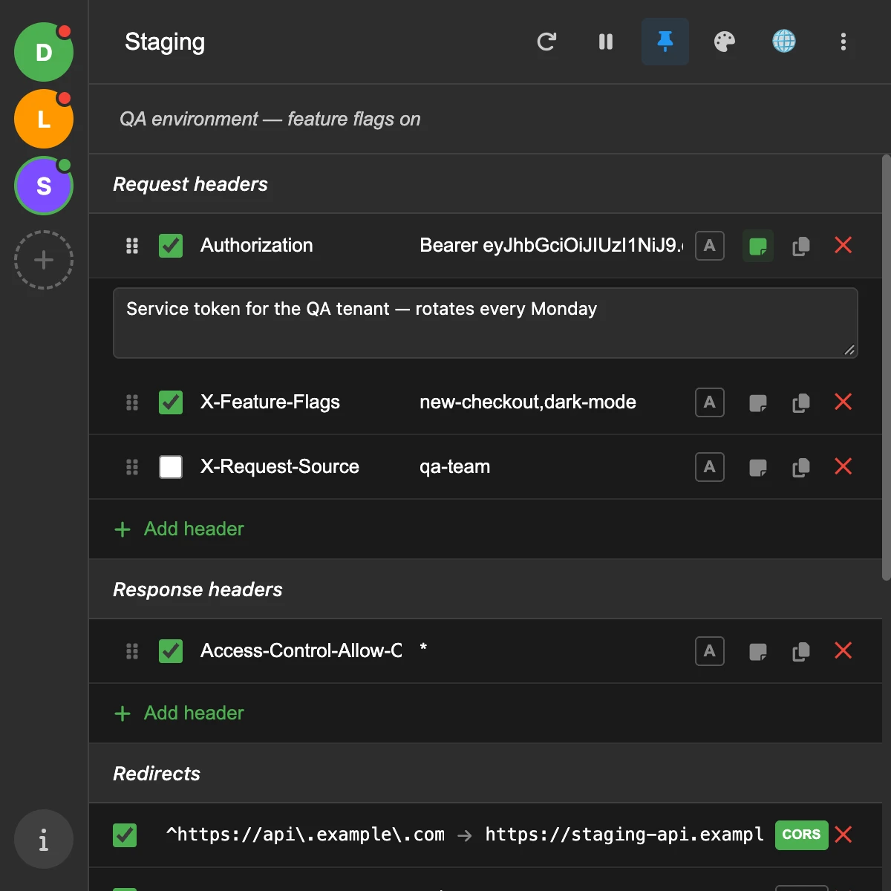
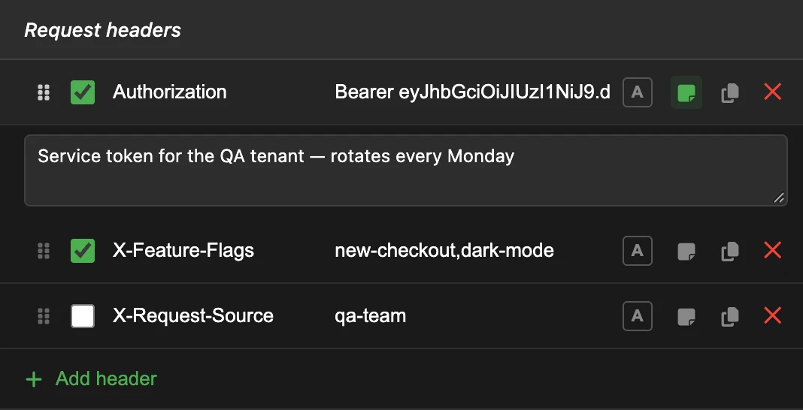
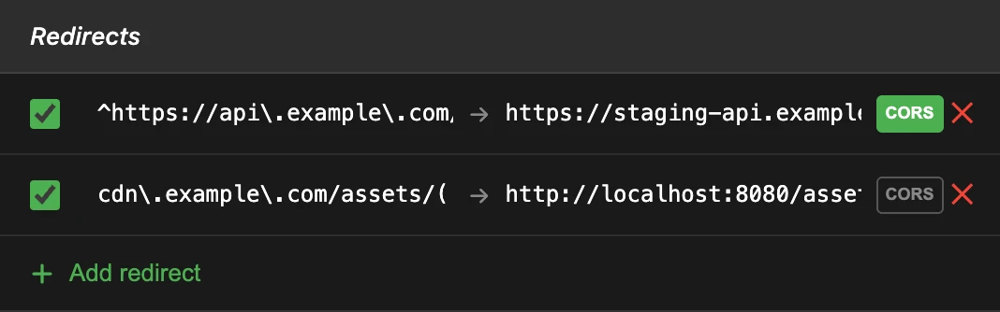
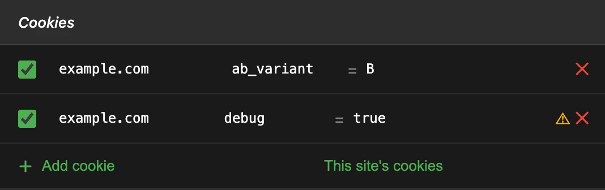

编辑 HTTP 请求头、重定向请求、添加 Cookie —— 每个环境一个配置文件
一款免费、开源的 Chrome 和 Firefox 扩展。无需改动代码，即可在预发布环境测试、调试身份验证和 CORS、切换环境。

功能
请求头和响应头
设置、追加或删除任意请求头。每一项都有独立开关和可选备注，半年后你仍然知道那个令牌为什么在那里。

环境之间的重定向
将匹配正则表达式的请求发送到另一个 URL（预发布环境或本地服务器），支持 $1 捕获组。目标位于其他源时可开启 CORS。

按配置文件设置 Cookie
无需写入浏览器，即可为某个域名的请求添加 Cookie。暂停或切换配置文件后立即停止发送；如果网站已有同名 Cookie，会显示警告。

其他功能
配置文件与过滤器
配置文件数量不限，每个都可以限定到特定域名，或在 Chrome 中限定到某个标签页组。
导入与导出
JSON 备份、其他请求头编辑器的配置列表，以及 Requestly 重定向规则。
分享已启用的项目
复制配置文件中已启用的项目，同事可将其导入为可直接使用的配置文件。
暂停
一键关闭所有规则，不会丢失任何内容。
设置或追加
对 Accept、Cookie 等多值请求头追加值，而不是替换。
浅色或深色，7 种语言
English, Español, 日本語, 한국어, Русский, 简体中文, 繁體中文。
常见用法
- 调用需要身份验证的接口
Authorization: Bearer <token> - 将前端指向预发布环境
api.example.com → staging-api.example.com - 调试 CORS
Access-Control-Allow-Origin: * - 强制开启功能开关或 A/B 变体
Cookie: ab_variant=B
你的数据只留在浏览器中
配置文件保存在本地。扩展没有服务器、没有分析、也没有账号，规则由浏览器自身执行，因此扩展永远看不到它修改的请求。代码在 GitHub 上，欢迎查看。
阅读隐私政策完全免费，也没有人付钱给我
这个扩展不收一分钱，无论是维护还是开发新功能，都没有人付我报酬。它是在我的空闲时间里一点点变好的。
有想改进的地方吗？提个 issue，我们一起讨论 —— 这同样免费，而且是最有效的方式。 提交 issue →
赞助一下，你的需求就会在我的队列里往前排。当然不赞助也完全没关系 ;)